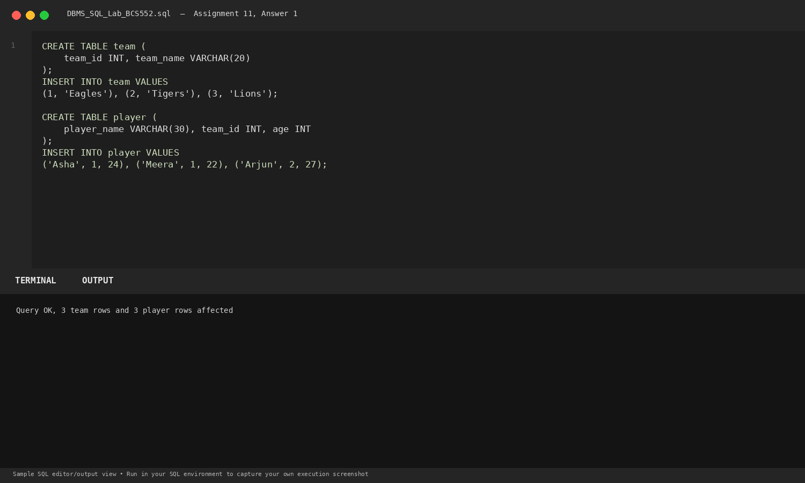
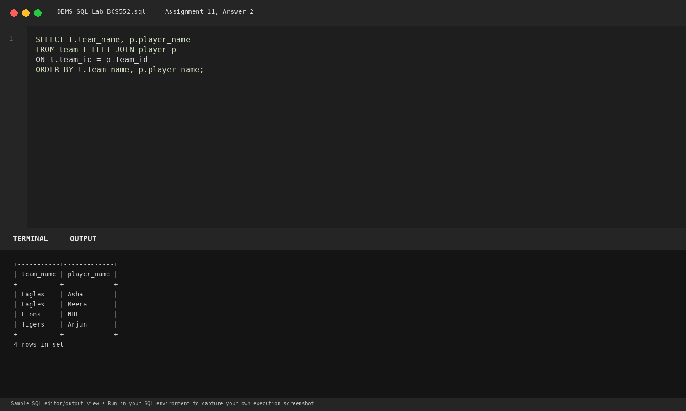
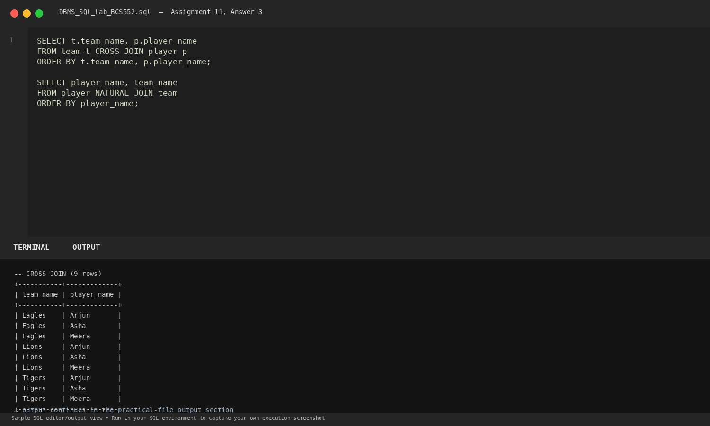

Task 1
Set up team and player tables
SQL Query
CREATE TABLE team (
team_id INT, team_name VARCHAR(20)
);
INSERT INTO team VALUES
(1, 'Eagles'), (2, 'Tigers'), (3, 'Lions');
CREATE TABLE player (
player_name VARCHAR(30), team_id INT, age INT
);
INSERT INTO player VALUES
('Asha', 1, 24), ('Meera', 1, 22), ('Arjun', 2, 27);Database Output
Query OK, 3 team rows and 3 player rows affected
Explanation: Initializes sports teams and players where team 3 (Lions) currently has no assigned players.
Terminal Screenshot Preview

Task 2
Use LEFT JOIN
SQL Query
SELECT t.team_name, p.player_name
FROM team t LEFT JOIN player p
ON t.team_id = p.team_id
ORDER BY t.team_name, p.player_name;Database Output
+-----------+-------------+ | team_name | player_name | +-----------+-------------+ | Eagles | Asha | | Eagles | Meera | | Lions | NULL | | Tigers | Arjun | +-----------+-------------+ 4 rows in set
Explanation: LEFT JOIN returns all rows from team; Lions has no matching player, yielding NULL in player columns.
Terminal Screenshot Preview

Task 3
Use CROSS JOIN and NATURAL JOIN
SQL Query
SELECT t.team_name, p.player_name
FROM team t CROSS JOIN player p
ORDER BY t.team_name, p.player_name;
SELECT player_name, team_name
FROM player NATURAL JOIN team
ORDER BY player_name;Database Output
-- CROSS JOIN (9 rows) +-----------+-------------+ | team_name | player_name | +-----------+-------------+ | Eagles | Arjun | | Eagles | Asha | | Eagles | Meera | | Lions | Arjun | | Lions | Asha | | Lions | Meera | | Tigers | Arjun | | Tigers | Asha | | Tigers | Meera | +-----------+-------------+ 9 rows in set -- NATURAL JOIN +-------------+-----------+ | player_name | team_name | +-------------+-----------+ | Arjun | Tigers | | Asha | Eagles | | Meera | Eagles | +-------------+-----------+ 3 rows in set
Explanation: CROSS JOIN produces a Cartesian product (3 x 3 = 9 tuples). NATURAL JOIN matches automatically on columns with identical names (team_id).
Terminal Screenshot Preview
